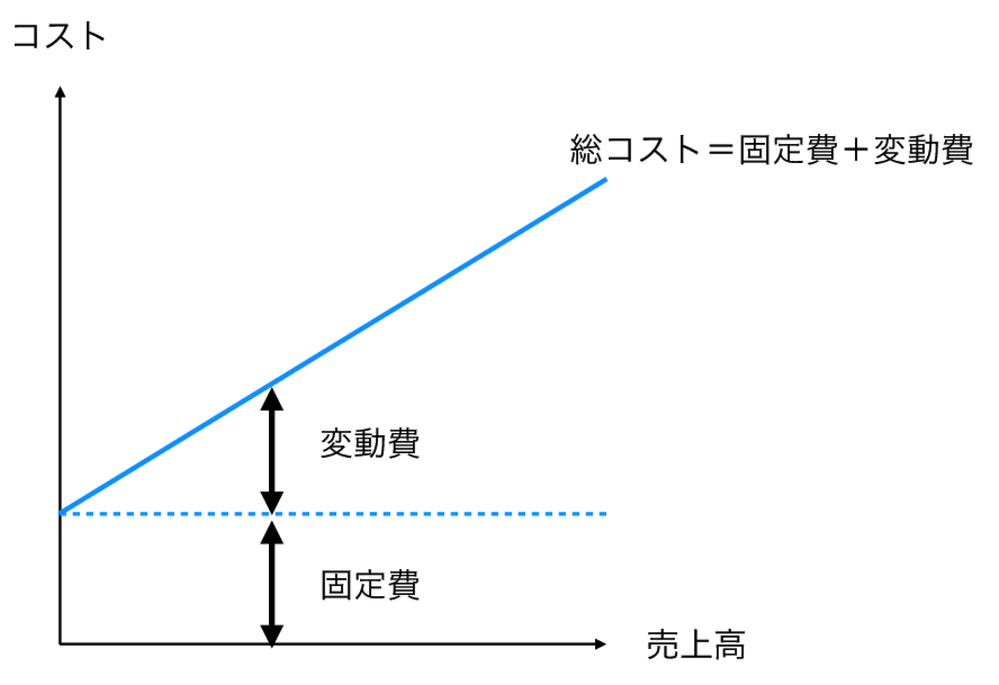
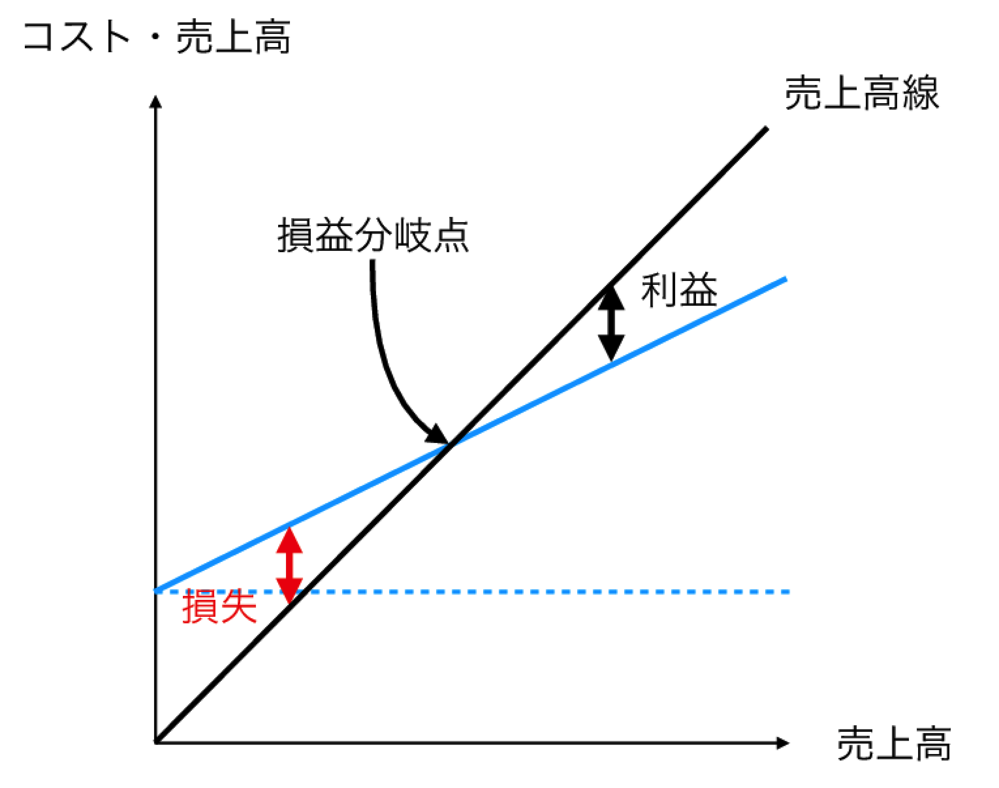

Chapter 7 単回帰分析とCVP分析
【応用例】
- 損益分岐点分析（CVP分析）
【関連する会計研究】
- 福嶋誠宣・新井康平 (2012) 「企業レベルでのコストビヘイビア推定」, 『Hirao School of Management Review』, Vol. 2, 1–7.
7.1 CVP分析とは
CVP分析とは，コスト（Cost），売上高（Volume），利益（Profit）の相互関係（CVP関係ともいう）を用いて行われる分析のことをさす31。 ただし，データの入手の困難性から，CVP分析を行う際にはVolumeとして売上高が利用されることが多い。 これらの3つには「利益 \(=\) 売上高 \(-\) コスト」という関係がある。この関係をベースとして，さまざまな分析がなされる。 最も代表的な分析はCVP関係を基礎として行われる損益分岐点分析である。 ある調査によれば，CVP分析は6割強の企業で利用されており(吉田, 福島, and 妹尾 2017, 67)，実務的にも非常に重要な分析ツールである。
CVP分析は短期（会計分野では通常，1年以内）の利益計画を策定する際にその力を発揮する。 なぜなら，CVP分析では，売上高や販売量，コスト，および利益の関係について条件を変えてシミュレーションできるからである。
たとえば，来期の営業利益目標が100億円だった場合に，CVP分析を利用して目標となる売上高や販売量を計算できる。 また，企業努力によりコスト削減に成功した場合に，それが利益に与える影響を確かめることもできる。
ただし，企業が公表している財務会計に則った財務数値のみでは即座に，CVP分析を行うことはできない。 なぜなら，CVP分析を行うためには，コストを固定費と変動費に分類しなければならないからである。 そこで，本章では，CVP分析を行う際の固定費と変動費に関したコスト関数の推定方法を紹介する。
7.1.1 固定費と変動費
先述したように，CVP分析を行うは，コストを固定費と変動費に分けて考える。このコストの分類方法は原価を操業度の観点から分類している32。 固定費とは売上高に関連なく発生する原価のことをさす（図7.1：左側）。 たとえば，毎月定額支払わなければならない家賃や正社員に対する給料が固定費となる。 なぜなら，こうしたコストはたとえ製品が全く売れなくても，また工場が操業していなくても発生するからである。
一方，変動費とは，売上高に応じて変化する原価のことをさす（図7.1：右側）。 たとえば，製品を製造するための主要な材料が変動費になることが多い。

Figure 7.1: 固定費と変動費
それではなぜコストを固定費と変動費に分ける必要があるのだろうか。 コストを固定費と変動費に分解することによって，たとえば，売上高が2倍となった場合にコストがいくらになるかが判明し，それとともに利益がいくらになるかがわかる。
もし仮に，コストを固定費と変動費に分解できなければ，操業度や売上高が変化した際にコストがどれだけ変化するのかわからない。 すると，必然的に利益もいくら変化するかがわからなくなる。 したがって，CVP分析においてはコストを固定費と変動費に分解することが重要となる。 これによって，短期の利益計画の策定といった意思決定に有用な情報をもたらす。
固定費・変動費という2つのコスト概念を合わせると，企業の総コストは図7.2で表すことができる。

Figure 7.2: 総コスト
ここで，コストを\(y\)，売上高を\(x\)と表現し，図7.2の総コストについて売上高を用いて数式で表現すると，
\[\begin{align*} y=\alpha +\beta x, \end{align*}\]
となる。 いま，\(\alpha\)は固定費を，\(\beta\)は変動費率を，\(\beta x\)は変動費を表す。 図7.2にさらに売上高を表す直線を加えると，図7.3になる。

Figure 7.3: CVP関係
なお，総コスト線と売上高線が交わる点を損益分岐点という。 損益分岐点とは，総費用と売上高が一致しており，利益も損失もゼロとなる点である。 したがって，企業が利益を確保するためには，損益分岐点を超えるような売上高ないしは販売量を達成する必要がある。
総コスト線が求まることで，損益分岐点分析や目標利益を達成するために必要な売上高を求めるといったCVP分析が可能となる。
7.1.2 固変分解の方法
コストを固定費と変動費に分解する方法（固変分解ともいう）はいくつか存在する。本章ではとくにその中でも最小二乗法による固変分解に焦点を合わせるが，その前に他の固変分解の方法も紹介する。
勘定科目別精査法は過去の経験にもとづいて，コストを勘定科目ごとに固定費と変動費に分類する方法である。この方法は，費目別精査法ともよばれる。
また，スキャッター・チャート法はこれまでに実現した原価の実績データをグラフ化し，これらの点の真ん中を通る原価直線を目分量で引く方法である。
さらに，高低点法もスキャッター・チャート法と同様に，過去のある期間内における実績データを用いる。ただし，高低点法では，最高の営業量のときと最低の営業量のときの2点のデータを用いて，コストを営業量1単位あたりの変動費（変動費率）と固定費に分類する。このとき，変動費率と固定費はそれぞれ次のように計算される。
\[\begin{align*} & \mbox{変動費率}=\frac{\mbox{最高の売上高のときのコスト}-\mbox{最低の売上高のときのコスト}}{\mbox{最高の売上高}-\mbox{最低の売上高}}, \\ &\mbox{固定費}=\mbox{最高（最低）の売上高のときのコスト}-\mbox{最高（最低）のときの売上高の変動費}, \end{align*}\]
たとえば，自動車のドアを製造しているとある工場において，1月から6月について，コストと売上高に関して，次のような実績データが得られたとする。なお，1月から6月のいずれの売上高も正常な範囲内であるとする。コストと売上高の単位は億円とする。
| 月 | 売上高 | コスト |
|---|---|---|
| 1月 | 300 | 16 |
| 2月 | 310 | 15 |
| 3月 | 450 | 17 |
| 4月 | 700 | 23 |
| 5月 | 650 | 20 |
| 6月 | 540 | 17 |
これから，最低の売上高は1月に実現し，最高の売上高は4月に実現している。また，それぞれコストは16億円と23.2億円である。したがって，高低点法によれば，変動費率および固定費は次のように計算される。
# 変動費率の計算
vr <- (23 - 16) / (700 - 300)
vr## [1] 0.0175# 最高の営業時の変動費
vc <- vr * 700
vc## [1] 12.25# 固定費の計算
fc <- 23.2 - vc
fc## [1] 10.95つまり，変動費率は0.0175，固定費は10.95億円と計算できた。
ただし，後述する最小二乗法を含めた固変分解の方法は，それぞれ一長一短あり，普遍的に正しい方法ではないことに注意が必要である。固変分解をするには，それぞれの方法の特徴を理解した上で，適切に選択することが必要である。
7.1.3 CVP分析における仮定
CVP分析は実務的にも広く用いられている管理会計ツールであるが，その背後にはいくつかの仮定が置かれていることに注意する必要がある(高田 2018, 221)。
- 変動費と固定費の分解が正しく行われていること。
- 固定費は，ある期間一定であること。
- 一定期間の間，変動費率に変化がないこと。
- 製品構成に変化がないこと。
- 異常な費用や損失の発生がないこと。
もちろん，現実的にはこれらの仮定を全て満たすことは限りなく不可能に近いだろう。したがって，CVP分析に基づく予測や分析結果は必ずしも精度が高いとは限らないことを頭の片隅に置いておくことが重要である。
しかし，仮にそうであったとしても，CVP分析が一定の有用な情報内容を含んでいることやその簡便さから，実務的に普及しているのだろう。
7.2 最小二乗法を利用した固変分解
7.2.1 データの確認
最小二乗法による固変分解の説明をする前に，まず，本節で利用するデータを読み込み，その中身を確認する。 データはこれまで利用してきた「data.csv」を利用する。
まずは作業環境をリセットし，分析に必要なパッケージおよび，それぞれのデータを読み込んで，必要な変数を抜き出してみよう。 ここでは，売上高と販管費と業種に関する情報を抜き出す。
# 作業環境のリセット
remove(list = ls(all = TRUE))
library(tidyverse)
# データの読み込み
df <- read_csv("data.csv",
locale = locale(encoding = "cp932")
) %>%
select(
sales,
sga,
ind
)##
## ─ Column specification ────────────────────────────
## cols(
## id = col_double(),
## name = col_character(),
## sales = col_double(),
## cogs = col_double(),
## sga = col_double(),
## asset = col_double(),
## debt = col_double(),
## equity = col_double(),
## receivable = col_double(),
## inventory = col_double(),
## payable = col_double(),
## tax = col_double(),
## ind = col_character(),
## ope_inc = col_double(),
## roa = col_double(),
## margin = col_double(),
## turnover = col_double(),
## employees = col_double()
## )それではまず，データの特徴を確認しおこう。
我々が今関心があるのは，売上高とコストの関係性である。
それらの関係性を視覚的にとらえるために，散布図を描いてみよう。
散布図を描くには，ggplot2パッケージのgeom_point()関数を利用すればよい。
# 販管費の散布図
g <- df %>%
ggplot(aes(x = sales, y = sga)) +
geom_point()
g
散布図を確認すると，縦軸に「e」と表記されている。これは，指数を表すexponentialの頭文字のeである。 具体的には，1e+05であれば，\(1*10^5=100000\)を表すこととなる。 2e+05であれば，\(2*10^5=200000\)を表すこととなる。 余談ではあるが，この表記は数値が小さいときにも利用される。 たとえば，1e-5であれば，\(1*10^-5=0.00001\)を表すこととなる。
それでは，つぎに，それぞれの業種を区別するために，異なる色をつけて散布図を描いてみよう。
# 販管費の散布図（業種ごとの色付き）
g <- df %>%
ggplot(aes(x = sales, y = sga, color = ind)) +
geom_point()
g
ggplot2では，facet_wrap()関数やfacet_grid()関数利用することで，条件ごとにグラフを出力することもできる。
ここではfacet_wrap()関数について説明する。
facet_wrap()関数では，facet_wrap(~ variable)と記述することによって，条件ごとにグラフを表示できる。
variableには条件となる変数を入れてやればよい。
それでは，先ほど作成したg(全体の散布図)に加える形で業種ごとの散布図を描いてみよう。
g + facet_wrap(~ ind)
散布図を確認すると，両業種ともに売上高と販管費には正の関係が見られそうである。 また，家電業界で非常に規模の大きなサンプルが入っていることが分かるものの，業種間の大きな違いは見られなさそうである。
統計分析において，こうした非常に大きな（または小さな）値の観測値は，除外されることがある。 通常，統計分析において利用されるサンプルは，分析において想定される母集団を適切に代表している必要がある。 そのため，異常な値はサンプルから除外されたり（trim：トリム），特定の値で置き換える（winsorize：ウィンザライズ）といった処理がなされる。
そこで，ここでは売上高とコストに関して，上限値から1%のサンプルを除外して分析を進めてみよう。 そのことによって，上図の異常な値はサンプルから除外されるはずである。
サンプルを除外するために，quantile()関数を用いて基準となる値を特定し33，filter()関数によってデータを絞り込む。まずは，売上高とコストに関して上限1%の値を特定し，それらの値以上の観測値をサンプルから除外する。
# 上限1％の値を特定する
df %>%
summarise(
sales_99 = quantile(sales, 0.99),
sga_99 = quantile(sga, 0.99)
)## # A tibble: 1 x 2
## sales_99 sga_99
## <dbl> <dbl>
## 1 1449800. 366996.# 上限10％以上の観測値を除外する
df_1 <- df %>%
filter(
sales < 1449799.52,
sga < 366995.58
)実際に，nrow()関数を利用して，除外前後のサンプルの行数を比較すると，1社減少していることがわかる。
nrow(df) - nrow(df_1)## [1] 1念の為，除外後の散布図を描くと，次のようになる。 先程の非常に大きな値を取る観測値が除外されていることを目視で確認しよう。
g <- df_1 %>%
ggplot(aes(x = sales, y = sga, color = ind)) +
geom_point() +
facet_wrap(~ ind)
g
CVP分析では売上高とコストの関係性を捉える直線を求める。 たとえば，前節で述べた高低点法では最高の売上高と最低の売上高の2点を選び，その直線関係によって，コストと売上高の関係をとらえる。 他方，スキャッターチャート法では，与えられた散布図を見て目分量で直線を引く方法である。 これから説明する最小二乗法では，与えられたデータを利用して，数学的に最も当てはまりの良い直線を求める。
7.2.2 最小二乗法に関する予備知識
最小二乗法は様々な分野で利用される回帰分析における統計分析の方法の一種である。 回帰分析は，要因となる変数（説明変数）と結果となる変数（被説明変数）の関係性を探る。 CVP分析では，とくに，単回帰分析を固変分解に利用できる。
単回帰分析では，1つの説明変数が被説明変数に与える影響を分析する34。 ただし，細かい計算過程については，統計学や計量経済学のテキストを参照せよ。 ここでは，コストを被説明変数，売上高を説明変数とした単回帰分析を考える。
今，ある企業のコストと売上高の関係が次の直線で表されているとしよう。 なお，ここで，\(y\)はコスト，\(x\)は売上高，\(i\)は企業を表すと考える。
\[\begin{align} y_i = \alpha + \beta x_i. \label{eq:6.2} \end{align}\]
このとき，\(y_i\)は\(\alpha\)(固定費)と\(\beta x_i\)(変動費)によって完全に表現される。 もし仮に，全てのデータが一直線上に並んでいるような場合であれば，このようなコストと売上高の直線関係を考えることができる。
ただし，通常そのようなことはありえない。 なぜなら，売上高と固定費，変動費の関係は，工場内での作業効率や，為替や景気変動といった非常に様々な要因から影響を受ける。 したがって，現実に観察されるコストのデータは，必ずしも一直線上にあるとは限らず，むしろそうした直線からズレることが多い。 いま，このズレのことを\(\varepsilon_i\)とすると，コストと売上高の関係を表す()式は次のように書き換えられる。
\[\begin{equation} y_i = \alpha + \beta x_i + \varepsilon_i. \label{eq:6.3} \end{equation}\]
ここで，\(\varepsilon_i\)は説明変数で説明しきれなかった部分をとらえている。 したがって，このズレが小さいほど，コストと売上高の関係性を表す式として望ましいことが直感的に理解できるだろう。
そこで，最小二乗法ではこのズレが最小となる直線を求める。 ()式を変形すると次のようになる。
\[\begin{align} \varepsilon_i = y_i - \alpha - \beta x_i. \label{eq:6.4} \end{align}\]
上述したように，最小二乗法では，この\(\varepsilon_i\)を最小にする\(\alpha\)と\(\beta\)を導出する。 最も単純な方法では，すべての企業の\(\varepsilon_i\)を足し合わせることが考えられる。 しかし，\(\varepsilon_i\)は正の値と負の値の両方を取りうるので，相殺し合う可能性がある。 そこで，\(\Sigma (\varepsilon_i)^2\) を最小にすることによって，\(\alpha\)と\(\beta\)を導出する。
細かい計算過程については統計学のテキストに譲るとして，最終的に\(\alpha\)と\(\beta\)は次のように導出される。
\[\begin{align*} \beta &= \frac{x \mbox{と} y \mbox{の共分散}}{x \mbox{の分散}}, \\ \alpha &= \bar{y} -\beta \bar{x}. \end{align*}\]
ここで，\(\bar{y}\)はコストの平均値，\(\bar{x}\)は売上高の平均値を表す。 最小二乗法によって推定される\(\beta\)は，回帰直線の傾きであり，\(x\)が1単位変化すると，\(y\)がどれだけ変化するかを表す。 すなわち，CVP関係としてとらえると，\(\beta\)は変動費率を表す。
一方，\(\alpha\)は回帰直線の切片であり，売上高が0であってもかかるコストを表していることから，固定費であると解釈できる。
7.2.3 最小二乗法の実践
それでは，販管費を最小二乗法によって，固変分解してみよう。最小二乗法はlm()関数を用いて行う。lm()関数では，以下のように記述をする。
lm( 被説明変数 ~ 説明変数, data）とすることで，係数の推定を行える。
今回は独立変数が1つだけの場合を扱っているが，独立変数が複数ある重回帰分析の場合には，独立変数を複数配置する。
特徴としては，被説明変数と説明変数が「~（チルダ）」で結ばれている点である。
説明変数が複数ある場合には，説明変数同士を「+」で結んでやればよい（詳しくは次章を参照されたい）。
販管費を最小二乗法によって固変分解をする際には，販管費が被説明変数，売上高が説明変数であると考えてやればよい。
# 販管費を用いたCVP分析
cvp <- lm(sga ~ sales, data = df_1)
cvp##
## Call:
## lm(formula = sga ~ sales, data = df_1)
##
## Coefficients:
## (Intercept) sales
## -12338.7507 0.2506出力された結果を確認すると，「Call」には推定された式が表示される。 「Coefficients」と書かれた部分に\(\alpha\)や\(\beta\)といった係数の推定値に関する情報が書かれている。 「(Intercept)」には定数項に対する推定値（すなわち，\(\alpha\)の値）が，「sales」には売上高の係数に対する推定値（すなわち，\(\beta\)の値）が記載されている。 それぞれの数値を確認すると，固定費は$-$12,340万円，変動費率は0.2506であることを示している。 このように最小二乗法を用いた固変分解では，固定費が負の値で推定されてしまうこともあるので注意が必要である。 データに異常な値が含まれていないかどうかや，データのサイズは十分な大きさかどうかを事前にチェックする必要があるだろう。
最小二乗法による推定値に関する統計的な情報は，summary()関数を利用することによって，確認できる。
summary()関数を利用すると，各係数の推定値が0と有意に異なるかどうかを確認できる。
今回はCVP分析における固変分解において回帰分析の手法を利用したが，回帰分析は一般には仮説検証の場面において利用されることが多い。
そのような場合には，統計量に関わる情報が非常に役に立つ。
summary(cvp)##
## Call:
## lm(formula = sga ~ sales, data = df_1)
##
## Residuals:
## Min 1Q Median 3Q Max
## -39956 -3989 4584 9808 23108
##
## Coefficients:
## Estimate Std. Error t value Pr(>|t|)
## (Intercept) -12338.75069 11224.30590 -1.099 0.289
## sales 0.25065 0.02165 11.580 0.00000000703 ***
## ---
## Signif. codes: 0 '***' 0.001 '**' 0.01 '*' 0.05 '.' 0.1 ' ' 1
##
## Residual standard error: 18060 on 15 degrees of freedom
## Multiple R-squared: 0.8994, Adjusted R-squared: 0.8927
## F-statistic: 134.1 on 1 and 15 DF, p-value: 0.000000007027上から順に出力結果を確認すると，「Call」には先程と同じく推定された式が表示されている。 「Residuals」には残差35に関する情報が示されている。 「Coefficients」にも先程と同様に係数に関する情報が書かれている。 その中で，「Estimates」という列には係数に対する推定値が書かれている。 「Std. Error」という列には推定値の標準誤差が，「t value」という列には推定値のt値が，「Pr(>|t|) 」という列には推定値のp値が記載されている。 また，一番右端の「\(\mbox{***}\)」や「.」といった記号はp値がどの有意水準より小さいかを示している。 基準となる有意水準は「Signif. codes」という行に示されている。 これらの記号はそれぞれ，「\(\mbox{***}\)」であればp値が0と0.001の間に，「\(\mbox{**}\)」であればp値が0.001と0.01との間に，「\(\mbox{*}\)」であればp値が0.01と0.05との間に，「.」であればp値が0.05と0.1の間に存在することを意味する。 何も記号がついていなければp値は0.1と1の間に存在する。
「(Intercept)」という行を確認すると，定数項に対する推定値（\(\alpha\)の値）は10％の水準で有意であることが，また「sales」の行を確認すると，売上高に対する推定値（\(\beta\)の値）は0.1％の水準で有意であることが分かる。
なお，残りの部分には，残差の標準誤差や自由度，決定係数，F検定に関する結果が示されている。
このようにsummary()関数には様々な情報が記載されているが，特定の情報のみを取り出すこともできる。
なお，たとえば係数や決定係数のみを出力したい場合には，「$」を利用してその中身のみを指定できる36。
summary(cvp)$coefficients## Estimate Std. Error t value Pr(>|t|)
## (Intercept) -12338.7506905 11224.30589791 -1.099289 0.28897321910477
## sales 0.2506499 0.02164582 11.579598 0.00000000702675summary(cvp)$adj.r## [1] 0.8926802それではつづいて，業種ごとに固変分解を行ってみよう。
業種ごとに分析をするためには，それぞれの業種で回帰分析を実行することとなる。
一番シンプルな方法は，filter()関数でそれぞれの業種だけのサンプルを作成し，それぞれのサンプルで回帰分析を実行することであろう。
まずはサンプルを絞る。
df_ds <- df_1 %>%
filter(
ind == "DrugStore"
)
df_er <- df_1 %>%
filter(
ind == "ElectronicsRetail"
)回帰分析については先程定義した「cvp」を利用できる。
そのためにはupdate()関数を利用しよう。
update()関数では，回帰式の変数の一部のみを変更する場合や，適用するデータを変更する際などに利用できる関数である。
update()関数はつぎのように記述する。
update(元の回帰式を格納したオブジェクト,.~., 新たなデータ)まず，environmentにある元の回帰式を格納したオブジェクトを記述する。
つぎに「.~.」は回帰式の修正に利用する項目である。
「.」は元の回帰式の変数を意味している。
特に修正する必要がない場合には，この部分は省略しても構わない。
「~」は通常のlm関数のときと同様に，被説明変数と説明変数を結んでいる。
たとえば，被説明変数に新たに別のコストとして売上原価(cogs)を利用したければ，次のようにしてやればよい。
（ただし，ここで利用しているデータにはcogsという変数がないので下のコードは実際には機能しない）
update(cvp, cogs ~ . , data = df_1)また，変数を追加する場合には「+」，変数を減らす場合には「-」というふうに記述する。
たとえば，説明変数に新たにgdpという変数を加えたければ，
update(cvp, . ~ . + gdp , data = df_1)としてやればよい。
cvp_ds <- update(cvp, data = df_ds)
cvp_ds##
## Call:
## lm(formula = sga ~ sales, data = df_ds)
##
## Coefficients:
## (Intercept) sales
## -23238.7204 0.2621cvp_er <- update(cvp, data = df_er)
cvp_er##
## Call:
## lm(formula = sga ~ sales, data = df_er)
##
## Coefficients:
## (Intercept) sales
## -395.8677 0.2423分析の結果，ドラッグストア業界の固定費は$-\(23,240百万円，変動費率は0.2621であることが分かる。 また，家電量販店業界の固定費は\)-$395.8677百万円，変動費率は0.2423であることが分かる。
今回の例のように，最小二乗法による固変分解は万能ではなく，しばしば問題を伴う。 たとえば，変動費率が1を超えてしまうことや，固定費がしばしば負の値として推定される問題が指摘されているので注意してほしい(福嶋 and 新井 2012; 乙政 2014; 高田 2018)。
その理由としては，固定費が長期的には変動費化すること(Kaplan and Cooper 1987)，製品単位あたりの販売価格や変動費が一定であることや，在庫の存在が無視されるといったCVP分析の教科書的仮定からの逸脱，利益と関連する自由裁量費の存在(福嶋, 新井, and 松尾 2014)などが考えられる。 CVP分析を行う際には，上記の問題を理解した上で，分析してほしい。
以上が最小二乗法を用いた固変分解の方法となる。売上高に対するコスト関数を推定することで，損益分岐点分析なども行うことができるようになる。 興味がある読者は，一般的な原価計算や管理会計のテキストを参照していただきたい。
Volumeは厳密には，売上高に限定されるわけではなく，営業量や操業度を含む広い概念である。↩︎
コストを材料費，労務費，経費に分ける分類方法もある。詳しくは，原価計算のテキストを参照せよ。↩︎
quantile()関数では任意の分位数を計算できる。その計算のアルゴリズムには9つのタイプが用意されているので，コンソールに「?quantile」と打ち込んで確認してみよう。↩︎
複数の説明変数を扱う回帰分析のことを重回帰分析と呼ぶが，その詳細については次章で説明する。↩︎
残差とは，実際の観測値と推定された回帰式の基づく予測値の差を表す。回帰分析を学習する上では非常に重要な概念ではあるが，ここでは扱わない。興味のある読者は，統計学や計量経済学のテキストを参照せよ。↩︎
Rのコンソールに「
?lm」や「?summary.lm」と入力し，それぞれの関数にどのような値が用意されているか確認してみよう。↩︎